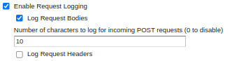
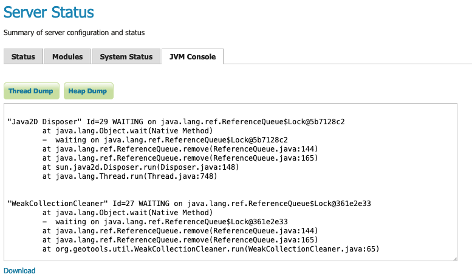

Troubleshooting
Checking WFS requests
It often happens that users report issues with hand-crafted WFS requests not working as expected. In the majority of the cases the request is malformed, but GeoServer does not complain and just ignores the malformed part (this behaviour is the default to make older WFS clients work fine with GeoServer).
If you want GeoServer to validate most WFS XML request you can post it to the following URL:
http://host:port/geoserver/ows?strict=true
Any deviation from the required structure will be noted in an error message. The only request type that is not validated in any case is the INSERT one (this is a GeoServer own limitation).
Leveraging GeoServer own log
GeoServer can generate a quite extensive log of its operations in the $GEOSERVER_DATA_DIR/logs/geoserver.log file. Looking into such file is one of the first things to do when troubleshooting a problem, in particular it's interesting to see the log contents in correspondence of a misbehaving request. The amount of information logged can vary based on the logging profile chosen in the Server Settings configuration page.
Logging service requests
GeoServer provides a request logging capability that is inactive by default. When enabled in the global settings GeoServer can log both the requested URL and POST requests contents.

Global SettingsTo track a history of the incoming requests:
-
Enable request logging by navigating to Settings > Global page, scroll down to Logging Settings, and Enable Request Logging.
-
Enable this feature using Enable Request Logging.
-
Optionally select Log Request Bodies to troubleshoot POST or PUT requests (for example WFS Transaction). The Number of characters to log setting will put an upper limit on the amount of data that is logged in order to avoid logging related performance issues.
-
Optionally select Log Request Headers to troubleshoot Request Headers (for example when checking security credentials).
-
Click Apply to apply these settings.
-
This will log request information, resulting in something like the following:
08 gen 11:30:13 INFO [geoserver.filters] - 127.0.0.1 "GET /geoserver/wms?HEIGHT=330&WIDTH=660&LAYERS=nurc%3AArc_Sample&STYLES=&SRS=EPSG%3A4326&FORMAT=image%2Fjpeg&SERVICE=WMS&VERSION=1.1.1&REQUEST=GetMap&EXCEPTIONS=application%2Fvnd.ogc.se_inimage&BBOX=-93.515625,-40.078125,138.515625,75.9375" "Mozilla/5.0 (X11; U; Linux i686; it; rv:1.9.0.15) Gecko/2009102815 Ubuntu/9.04 (jaunty) Firefox/3.0.15" "http://localhost:8080/geoserver/wms?service=WMS&version=1.1.0&request=GetMap&layers=nurc:Arc_Sample&styles=&bbox=-180.0,-90.0,180.0,90.0&width=660&height=330&srs=EPSG:4326&format=application/openlayers" 08 gen 11:30:13 INFO [geoserver.filters] - 127.0.0.1 "GET /geoserver/wms?HEIGHT=330&WIDTH=660&LAYERS=nurc%3AArc_Sample&STYLES=&SRS=EPSG%3A4326&FORMAT=image%2Fjpeg&SERVICE=WMS&VERSION=1.1.1&REQUEST=GetMap&EXCEPTIONS=application%2Fvnd.ogc.se_inimage&BBOX=-93.515625,-40.078125,138.515625,75.9375" took 467ms 08 gen 11:30:14 INFO [geoserver.filters] - 127.0.0.1 "GET /geoserver/wms?REQUEST=GetFeatureInfo&EXCEPTIONS=application%2Fvnd.ogc.se_xml&BBOX=-93.515625%2C-40.078125%2C138.515625%2C75.9375&X=481&Y=222&INFO_FORMAT=text%2Fhtml&QUERY_LAYERS=nurc%3AArc_Sample&FEATURE_COUNT=50&Layers=nurc%3AArc_Sample&Styles=&Srs=EPSG%3A4326&WIDTH=660&HEIGHT=330&format=image%2Fjpeg" "Mozilla/5.0 (X11; U; Linux i686; it; rv:1.9.0.15) Gecko/2009102815 Ubuntu/9.04 (jaunty) Firefox/3.0.15" "http://localhost:8080/geoserver/wms?service=WMS&version=1.1.0&request=GetMap&layers=nurc:Arc_Sample&styles=&bbox=-180.0,-90.0,180.0,90.0&width=660&height=330&srs=EPSG:4326&format=application/openlayers" 08 gen 11:30:14 INFO [geoserver.filters] - 127.0.0.1 "GET /geoserver/wms?REQUEST=GetFeatureInfo&EXCEPTIONS=application%2Fvnd.ogc.se_xml&BBOX=-93.515625%2C-40.078125%2C138.515625%2C75.9375&X=481&Y=222&INFO_FORMAT=text%2Fhtml&QUERY_LAYERS=nurc%3AArc_Sample&FEATURE_COUNT=50&Layers=nurc%3AArc_Sample&Styles=&Srs=EPSG%3A4326&WIDTH=660&HEIGHT=330&format=image%2Fjpeg" took 314ms
Server Status JVM Console
GeoServer provides a built-in JVM Console used to obtain:
- Thread Dump information
- Heap Dump information
This page can be used to check current status and download the results for careful review.

JVM ConsoleUsing JDK tools to get stack and memory dumps
The JDK contains three useful command line tools that can be used to gather information about GeoServer instances that are leaking memory or not performing as requested: jps, jstack and jmap.
All tools work against a live Java Virtual Machine, the one running GeoServer in particular. In order for them to work properly you'll have to run them with a user that has enough privileges to connect to the JVM process, in particular super user or the same user that's running the JVM usually have the required right.
jps
jps is a tool listing all the Java processing running. It can be used to retrieve the pid (process id) of the virtual machine that is running GeoServer. For example:
> jps -mlv
16235 org.apache.catalina.startup.Bootstrap start -Djava.util.logging.manager=org.apache.juli.ClassLoaderLogManager -Djava.util.logging.config.file=/home/aaime/devel/webcontainers/apache-tomcat-6.0.18/conf/logging.properties -Djava.endorsed.dirs=/home/aaime/devel/webcontainers/apache-tomcat-6.0.18/endorsed -Dcatalina.base=/home/aaime/devel/webcontainers/apache-tomcat-6.0.18 -Dcatalina.home=/home/aaime/devel/webcontainers/apache-tomcat-6.0.18 -Djava.io.tmpdir=/home/aaime/devel/webcontainers/apache-tomcat-6.0.18/temp
11521 -XX:MinHeapFreeRatio=10 -XX:MaxHeapFreeRatio=20 -Djava.library.path=/usr/lib/jni -Dosgi.requiredJavaVersion=1.5 -XX:MaxPermSize=256m -Xms64m -Xmx1024m -XX:CMSClassUnloadingEnabled -XX:CMSPermGenSweepingEnabled -XX:+UseParNewGC
16287 sun.tools.jps.Jps -mlv -Dapplication.home=/usr/lib/jvm/java-6-sun-1.6.0.16 -Xms8m
The output shows the pid, the main class name if available, and the parameters passed to the JVM at startup. In this example 16235 is Tomcat hosting GeoServer, 11521 is an Eclipse instance, and 16287 is jps itself. In the common case you'll have only few JVM and the one running GeoServer can be identified by the parameters passed to it.
jstack
jstack is a tool for extracting the current stack trace for each thread running in the virtual machine. It can be used to identify scalability issues and to gather what the program is actually doing.
It usually requires detailed understanding of the inner workings of GeoServer to properly interpret the jstack output.
An example of usage:
> jstack -F -l 16235 > /tmp/tomcat-stack.txt
Attaching to process ID 16235, please wait...
Debugger attached successfully.
Server compiler detected.
JVM version is 14.2-b01
And the file contents might look like:
Deadlock Detection:
No deadlocks found.
Thread 16269: (state = BLOCKED)
- java.lang.Object.wait(long) @bci=0 (Interpreted frame)
- org.apache.tomcat.util.threads.ThreadPool$MonitorRunnable.run() @bci=10, line=565 (Interpreted frame)
- java.lang.Thread.run() @bci=11, line=619 (Interpreted frame)
Locked ownable synchronizers:
- None
Thread 16268: (state = IN_NATIVE)
- java.net.PlainSocketImpl.socketAccept(java.net.SocketImpl) @bci=0 (Interpreted frame)
- java.net.PlainSocketImpl.accept(java.net.SocketImpl) @bci=7, line=390 (Interpreted frame)
- java.net.ServerSocket.implAccept(java.net.Socket) @bci=60, line=453 (Interpreted frame)
- java.net.ServerSocket.accept() @bci=48, line=421 (Interpreted frame)
- org.apache.jk.common.ChannelSocket.accept(org.apache.jk.core.MsgContext) @bci=46, line=306 (Interpreted frame)
- org.apache.jk.common.ChannelSocket.acceptConnections() @bci=72, line=660 (Interpreted frame)
- org.apache.jk.common.ChannelSocket$SocketAcceptor.runIt(java.lang.Object[]) @bci=4, line=870 (Interpreted frame)
- org.apache.tomcat.util.threads.ThreadPool$ControlRunnable.run() @bci=167, line=690 (Interpreted frame)
- java.lang.Thread.run() @bci=11, line=619 (Interpreted frame)
Locked ownable synchronizers:
- None
Thread 16267: (state = BLOCKED)
- java.lang.Object.wait(long) @bci=0 (Interpreted frame)
- java.lang.Object.wait() @bci=2, line=485 (Interpreted frame)
- org.apache.tomcat.util.threads.ThreadPool$ControlRunnable.run() @bci=26, line=662 (Interpreted frame)
- java.lang.Thread.run() @bci=11, line=619 (Interpreted frame)
Locked ownable synchronizers:
- None
...
jmap
jmap is a tool to gather information about the Java virtual machine. It can be used in a few interesting ways.
By running it without arguments (other than the process id of the JVM) it will print out a dump of the native libraries used by the JVM. This can come in handy when one wants to double check GeoServer is actually using a certain version of a native library (e.g., GDAL):
> jmap 17251
Attaching to process ID 17251, please wait...
Debugger attached successfully.
Server compiler detected.
JVM version is 14.2-b01
0x08048000 46K /usr/lib/jvm/java-6-sun-1.6.0.16/jre/bin/java
0x7f87f000 6406K /usr/lib/jvm/java-6-sun-1.6.0.16/jre/lib/i386/libNCSEcw.so.0
0x7f9b2000 928K /usr/lib/libstdc++.so.6.0.10
0x7faa1000 7275K /usr/lib/jvm/java-6-sun-1.6.0.16/jre/lib/i386/libgdal.so.1
0x800e9000 1208K /usr/lib/jvm/java-6-sun-1.6.0.16/jre/lib/i386/libclib_jiio.so
0x80320000 712K /usr/lib/jvm/java-6-sun-1.6.0.16/jre/lib/i386/libNCSUtil.so.0
0x80343000 500K /usr/lib/jvm/java-6-sun-1.6.0.16/jre/lib/i386/libNCSCnet.so.0
0x8035a000 53K /lib/libgcc_s.so.1
0x8036c000 36K /usr/lib/jvm/java-6-sun-1.6.0.16/jre/lib/i386/libnio.so
0x803e2000 608K /usr/lib/jvm/java-6-sun-1.6.0.16/jre/lib/i386/libawt.so
0x80801000 101K /usr/lib/jvm/java-6-sun-1.6.0.16/jre/lib/i386/libgdaljni.so
0x80830000 26K /usr/lib/jvm/java-6-sun-1.6.0.16/jre/lib/i386/headless/libmawt.so
0x81229000 93K /usr/lib/jvm/java-6-sun-1.6.0.16/jre/lib/i386/libnet.so
0xb7179000 74K /usr/lib/jvm/java-6-sun-1.6.0.16/jre/lib/i386/libzip.so
0xb718a000 41K /lib/tls/i686/cmov/libnss_files-2.9.so
0xb7196000 37K /lib/tls/i686/cmov/libnss_nis-2.9.so
0xb71b3000 85K /lib/tls/i686/cmov/libnsl-2.9.so
0xb71ce000 29K /lib/tls/i686/cmov/libnss_compat-2.9.so
0xb71d7000 37K /usr/lib/jvm/java-6-sun-1.6.0.16/jre/lib/i386/native_threads/libhpi.so
0xb71de000 184K /usr/lib/jvm/java-6-sun-1.6.0.16/jre/lib/i386/libjava.so
0xb7203000 29K /lib/tls/i686/cmov/librt-2.9.so
0xb725d000 145K /lib/tls/i686/cmov/libm-2.9.so
0xb7283000 8965K /usr/lib/jvm/java-6-sun-1.6.0.16/jre/lib/i386/server/libjvm.so
0xb7dc1000 1408K /lib/tls/i686/cmov/libc-2.9.so
0xb7f24000 9K /lib/tls/i686/cmov/libdl-2.9.so
0xb7f28000 37K /usr/lib/jvm/java-6-sun-1.6.0.16/jre/lib/i386/jli/libjli.so
0xb7f32000 113K /lib/tls/i686/cmov/libpthread-2.9.so
0xb7f51000 55K /usr/lib/jvm/java-6-sun-1.6.0.16/jre/lib/i386/libverify.so
0xb7f60000 114K /lib/ld-2.9.so
It's also possible to get a quick summary of the JVM heap status:
> jmap -heap 17251
Attaching to process ID 17251, please wait...
Debugger attached successfully.
Server compiler detected.
JVM version is 14.2-b01
using thread-local object allocation.
Parallel GC with 2 thread(s)
Heap Configuration:
MinHeapFreeRatio = 40
MaxHeapFreeRatio = 70
MaxHeapSize = 778043392 (742.0MB)
NewSize = 1048576 (1.0MB)
MaxNewSize = 4294901760 (4095.9375MB)
OldSize = 4194304 (4.0MB)
NewRatio = 8
SurvivorRatio = 8
PermSize = 16777216 (16.0MB)
MaxPermSize = 67108864 (64.0MB)
Heap Usage:
PS Young Generation
Eden Space:
capacity = 42401792 (40.4375MB)
used = 14401328 (13.734176635742188MB)
free = 28000464 (26.703323364257812MB)
33.96396076845054% used
From Space:
capacity = 4718592 (4.5MB)
used = 2340640 (2.232208251953125MB)
free = 2377952 (2.267791748046875MB)
49.60462782118056% used
To Space:
capacity = 4587520 (4.375MB)
used = 0 (0.0MB)
free = 4587520 (4.375MB)
0.0% used
PS Old Generation
capacity = 43188224 (41.1875MB)
used = 27294848 (26.0303955078125MB)
free = 15893376 (15.1571044921875MB)
63.19974630121396% used
PS Perm Generation
capacity = 38404096 (36.625MB)
used = 38378640 (36.60072326660156MB)
free = 25456 (0.0242767333984375MB)
99.93371540369027% used
In the result it can be seen that the JVM is allowed to use up to 742MB of memory, and that at the moment the JVM is using 130MB (rough sum of the capacities of each heap section). In case of a persistent memory leak the JVM will end up using whatever is allowed to and each section of the heap will be almost 100% used.
To see how the memory is actually being used in a succinct way the following command can be used (on Windows, replace head -25 with more):
> jmap -histo:live 17251 | head -25
num #instances #bytes class name
----------------------------------------------
1: 81668 10083280 <constMethodKlass>
2: 81668 6539632 <methodKlass>
3: 79795 5904728 [C
4: 123511 5272448 <symbolKlass>
5: 7974 4538688 <constantPoolKlass>
6: 98726 3949040 org.hsqldb.DiskNode
7: 7974 3612808 <instanceKlassKlass>
8: 9676 2517160 [B
9: 6235 2465488 <constantPoolCacheKlass>
10: 10054 2303368 [I
11: 83121 1994904 java.lang.String
12: 27794 1754360 [Ljava.lang.Object;
13: 9227 868000 [Ljava.util.HashMap$Entry;
14: 8492 815232 java.lang.Class
15: 10645 710208 [S
16: 14420 576800 org.hsqldb.CachedRow
17: 1927 574480 <methodDataKlass>
18: 8937 571968 org.apache.xerces.dom.ElementNSImpl
19: 12898 561776 [[I
20: 23122 554928 java.util.HashMap$Entry
21: 16910 541120 org.apache.xerces.dom.TextImpl
22: 9898 395920 org.apache.xerces.dom.AttrNSImpl
By the dump we can see most of the memory is used by the GeoServer code itself (first 5 items) followed by the HSQL cache holding a few rows of the EPSG database. In case of a memory leak a few object types will hold the vast majority of the live heap. Mind, to look for a leak the dump should be gathered with the server almost idle. If, for example, the server is under a load of GetMap requests the main memory usage will be the byte[] holding the images while they are rendered, but that is not a leak, it's legitimate and temporary usage.
In case of memory leaks a developer will probably ask for a full heap dump to analyze with a high end profiling tool. Such dump can be generated with the following command:
> jmap -dump:live,file=/tmp/dump.hprof 17251
Dumping heap to /tmp/dump.hprof ...
Heap dump file created
The dump files are generally as big as the memory used so it's advisable to compress the resulting file before sending it to a developer.
XStream
GeoServer and GeoWebCache use XStream to read and write XML for configuration and for their REST APIs. In order to do this securely, it needs a list of Java classes that are safe to convert between objects and XML. If a class not on that list is given to XStream, it will generate the error com.thoughtworks.xstream.security.ForbiddenClassException. The specific class that was a problem should also be included. This may be a result of the lists of allowed classes missing a class, which should be reported as a bug, or it may be caused by an extension/plugin not adding its classes to the list (finally, it could be someone trying to perform a "Remote Execution" attack, which is what the allow-list is designed to prevent).
This can be worked around by setting the system properties GEOSERVER_XSTREAM_WHITELIST for GeoServer or GEOWEBCACHE_XSTREAM_WHITELIST for GeoWebCache to a semicolon separated list of qualified class names. The class names may include wildcards ? for a single character, * for any number of characters not including the separator ., and ** for any number of characters including separators. For instance, org.example.blah.SomeClass; com.demonstration.*; ca.test.** will allow, the specific class org.example.blah.SomeClass, any class immediately within the package com.demonstration, and any class within the package ca.test or any of its descendant packages.
GEOSERVER_XSTREAM_WHITELIST and GEOWEBCACHE_XSTREAM_WHITELIST should only be used as a workaround until GeoServer, GWC, or the extension causing the problem has been updated, so please report to the users list the missing classes as soon as possible.